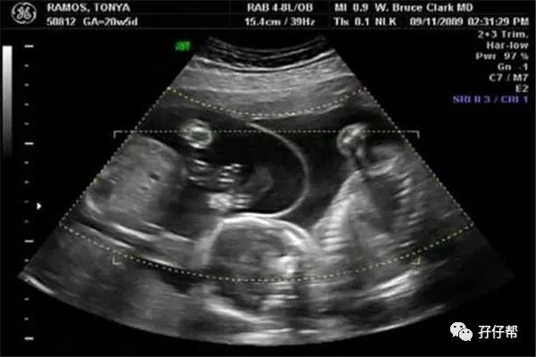
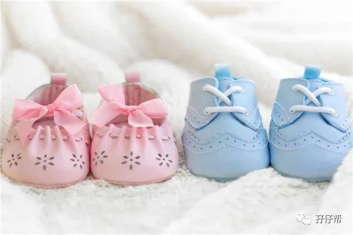

⬆⬆关注孖仔帮，与您分享双胞胎育儿经⬆⬆
文|圆圈妈 一个文思如尿崩的双胎妈妈
图|来自网络
【01】两胎儿的发育情况
孕21周的胎宝宝有胡萝卜那么长了，从头部到臀部长约21.2cm，约274G，如图所示▼
孕21周的双胞胎胎儿发育图▼
B超孕21周的双胞胎胎儿影像图▼
【02】圆圈妈的孕期回忆录
Ⅰ 房事？有贼心没贼胆
进入孕21周，渐渐习惯了不合逻辑的凌乱孕期生活，我也终于有点小心思开始找回属于小两口的二人世界，比如，性生活！
听说孕中期可以恢复房事，我和圆圈爸交换了眼神，还是算了吧！抱着这样的肚子做啥都没意思。
想到有两位未成年人在里面旁观，想想就觉得尴尬至极。
可能我们是一胎，都是新手父母，很多事情都比较谨慎，都不敢乱来，只要是让我们悠着点的，我们都不敢踏入雷池半步。
因为当时胎盘低置，医生考虑到我早孕期有先兆流产，也说了尽量避免同房，于是我们也就把房事列入禁忌名单。
☞☞TIPS☜☜：其实并没有规定，在正常妊娠的情况下，孕妇不可以过性生活，双胎孕妈妈也不例外。哪怕你是胎盘低置状态，只要没有伴随出血的现象，房事依然不受影响。
段涛大夫也说了：“不要一看到胎盘位置低就不让人同房，这不科学，也不人道。”
如果你和队友对房事比较矛盾，可以咨询下产检医生，不过你收到的答复可能不尽相同，有说可以，有说不可以，有说看着办。
讲真，这事情拿去问医生意见，确实有点勉为其难，自己尴尬，医生也难为情。
如果你的产检各项指标都没有异常，可以确保安全的情况下，适当进行下也无可厚非。
悠着点，注意下，有些姿势能免则免，最重要的是避免压迫到准妈妈的肚子。
Ⅱ 怀孕后，我就是个矛盾体
明明才产检完就掰着手指算下一次产检的时间，我就巴不得明天也是产检日，甚至还嚷嚷着早点预约产科号。
可是真正到了例行产检的日子就跟上坟场似的，心里扑通扑通地跳个不停，万般不情愿，却又想去不敢去。
圆圈爸很清楚，我无非就是想无时无刻知道两胎儿的状况，为了阻止我这发疯似的举动，圆圈爸从他的女同事那里借来了胎心仪。
我对这个胎心仪爱不释手，每天早晚都要听一次。有一次操作不当，没有听到另一个崽的胎心，急的当场大哭，差点要飞奔到医院，又有好几次测得两胎心都偏慢，导致情绪失控。
圆圈爸担心我把胎心仪给砸了，又果断将其还给了同事。
没有胎心仪的日子，我更加患得患失。吃不好！睡不好！导致恶性循环，产生负罪感，觉得自己很罪过！想做点改变下，却又感觉力不从心！
Ⅲ 孕后第一次逛街，我更像个碰瓷的
孕前的衣服统统穿不下，我在圆圈爸的陪同下去了去了距离住处2公里远的小夜市买孕妇装。
怀孕后，除了上下班，我几乎没有外出过，这是我孕后第一次出来逛街。
此时，我明显感觉到，我的运动能力下降了不少，才走了不到1公里的路，腰就酸胀到受不了，只想坐下来休息。
5个月的肚子已经有单胎妈妈的8个月那么大了，我的腰身一直横向升级了好几个档位，动作也开始笨拙，走起路来像只企鹅，挪着，踱着,往前移动...
路人都纷纷给我让路，提防地看着我，生怕把我怎么滴就摊上大事了。看着那些异样的眼神，我真哭笑不得，感觉自己像是出来碰瓷的。
“哟，大妹子，你这…都快生了，还买什么衣服啊！”
衣服店的老板娘很不可思议地看着我的肚子。
我只能“呵呵…”心想，我也希望快生了，可是才5个月，还有的是时间熬啊！
Ⅳ 我提前体验下老太太的生活
我的身体越来越笨重，行动越来越费力了，不断增大的肚子，让我开始提前步入老年化阶段，出现行动不便或迟缓的现象。
站姿，坐姿，走姿等均出现不同程度的退化，比如，不小心掉了一只笔，明明就在眼皮底下，我弯腰去捡已经很困难了。
要慢慢下蹲，一只手着地撑住，让肚子朝上，另一只手去捡，然后借助腿部力量，站起来。
孕前，我是个风一样的女子，百米外还能追上公交车并“凌波微步”跳上公交车，现在，我不能跳，不能滚，只能爬！
因为要扶着把手上车，身子已经进去了，脚还要再使劲往后一蹬才能上去，这个动作就叫“爬”！
每当我出现在车门口，细心的司机就很谨慎地看着我，从后视镜确认到我这个重量级别的人物找到位置，平安坐下了，才敢启动车子。
我心里暖暖的，可是又觉得特别不好意思，真想告诉他真相：莫慌，我这肚子才5个月，没那么快生！
Ⅴ 行走中的孕肚，你可安好
我下班要穿过马路对面坐公交车回去，才5个站，不塞车情况下,10分钟左右就到站了，如果到路口走斑马线，就要多走100米。
有一次我都图省事，跟着一群人来一场“中国式过马路”，那些人跑得快，我走得慢，走到路中间就剩下我一个孕妇在大马路中间上演“独角戏”。
我吓坏了，赶紧抱着西瓜般大的肚子小碎步跑，边跑边朝着司机猛打手势让我先过去，前面的司机都替我捉急，纷纷刹车避让我。
当时正是下班高峰期，后面的车长龙马上响起喇叭声一片。
从那以后，我再也不敢横穿马路了，宁愿绕远一点走斑马线，也不想怂在马路中间，抱着肚子吓到尿失禁。
Ⅵ 我的肚子不经撞
我等的那趟车经常人山人海，遇上晚高峰连蚊子都飞不进去，哪怕是孕前身材婀娜多姿的我，都要费劲吃奶的力气，吸气收腹才不至于被关在车门外。
现在挺着巨肚去坐公交车，经常不受待见，有些赶着交班的司机看见我招手，马上摆手让我等下一趟，门都不开，踩油门跑了。
也罢，宁可多等，也不要站在拥挤的车上，去挑战有可能出现的潜在危险，万一哪个冒失鬼不小心撞到我，就很不值当了。
比如，有次下班挤公交车，前排乘客让了位置给我，人很挤，一个刹车，有乘客来不及扶住把手，手肘撞到我的肚子了。
我吓得一脸惨白。
当时只觉得肚皮一阵疼，过一会就没事，当晚一直很紧张兮兮地盯着肚子看。
21周的胎动，还比较微弱，我也没抓到规律。
偏偏当晚他们就不动了，可把我急坏了，一整晚没睡，直到第二天早晨，迷迷糊糊的我被一个温柔似水的踢踹惊醒了。
这么有力的胎动，应该问题不大吧！我终于松了口气，从此对下班坐公交车有阴影。
☞☞TIPS☜☜： 下班高峰期挤公交车的时候，宁愿错过一趟车也不要冒险进入人堆里，且不说站久了腰痛，孕妇很容易重心不稳，稍微一个刹车都能把你撂倒。
如果没人让位置，可请求司乘人员帮助，别害羞，大胆提出来。
若是自己开车上下班，虽然不用与别人挤公交车，但还是悠着点。尤其孕后期，肚子巨大，安全带都绑不上去的时候，就别逞能，让队友全程接送吧！
☞未完待续☜
上期推文:
连载（一）|圆圈妈双胞胎怀孕过程第4周
连载（二）|圆圈妈双胞胎怀孕过程第5周
连载（三）|圆圈妈双胞胎怀孕过程第6周
连载（四）|圆圈妈双胞胎怀孕过程第7周
连载（五）|圆圈妈双胞胎怀孕过程第8周
连载（六）|圆圈妈双胞胎怀孕过程第9周
连载（七）|圆圈妈双胞胎怀孕过程第10周
连载（八）|圆圈妈双胞胎怀孕过程第11周
连载（九）|圆圈妈双胞胎怀孕过程第12周
连载（十）|圆圈妈双胞胎怀孕过程第13周
连载（十一）|圆圈妈双胞胎怀孕过程第14周
连载（十二）|圆圈妈双胞胎怀孕过程第15周
连载（十三）|圆圈妈双胞胎怀孕过程第16周
连载（十四）|圆圈妈双胞胎怀孕过程第17周
连载（十五）|圆圈妈双胞胎怀孕过程第18周
连载（十六）|圆圈妈双胞胎怀孕过程第19周
连载（十七）|圆圈妈双胞胎怀孕过程第20周
下期预告：
连载（十九）|圆圈妈双胞胎怀孕过程第22周
本文系圆圈妈sgguy-com原创，来源于孖仔帮，专注双胞胎孕期育儿经验分享，著作权归孖仔帮所有。
---☜✪ The end ✪☞---
关于这个号
谢谢关注！我是圆圈妈
85后，全职双胎妈妈
家有孖仔两枚，圆圈&圈圈
双胞胎育儿公众号：孖仔帮
ID:twinsbang
旨意分享双胞胎育儿经验帮助双胞胎家庭
有经验可循
有组织可靠
希望我的经验对您有所启发
期待与您一起共享双胞胎育儿经
孖仔帮目前有5个微信社群
孕期群，喂养群，闲置群
双胞胎爸爸专属群，双胞胎专属教育群
如需入交流群
请+圆圈妈的微信号sgguy-com
或扫描下方二维码
由圆圈妈邀请入群
添加请注明：
宝妈/宝爸，孕期/已生
长按二维码加圆圈妈好友
往期精彩文章回顾：
105：同卵双胞胎的天敌--双胞胎输血综合征
106：官宣：双绒双羊，单绒双羊，单绒单羊傻傻分不清？一篇消除你所有疑问
215：双胎子宫日记系列|（下）你看不看？双胞胎妈妈直播剖腹产全过程
219：双胞胎准爸爸的生存指南：不做猪一样的队友，活着出来喜当爹
306：真人示范！双胞胎妈妈高难度喂母乳技巧
312：为出生就进NICU的双胞胎新生儿，我必须告诉你这5个通关秘籍
407：嘿！双胞胎孩子的亲子阅读攻略，要来一份吗（1--2岁阶段）
605：看过这份最简单的双胞胎宝宝用品囤货清单，其他的都是将就
608：听说...你在找双胞胎育儿神器，这事儿我熟！
723：双胎妈妈，为什么我不建议你这样坐月子...
我猜你肯定喜欢看上面的文章，对不对嘛？关注孖仔帮，回复文章前面的数字编号即可阅读。
长按识别二维码关注我们
更多孖仔帮双胞胎原创育儿文章，
请猛戳 "阅读原文"
或者直接上圆圈妈的个人博客。
博客链接↓↓
https://www.sgguy.com/twinsbang
#重磅互动#
评论区聊一聊
你希望圆圈妈写什么育儿经验干货？
随便提，万一下篇就写了呢？
喜欢我，就让我好看吧！☟☟

